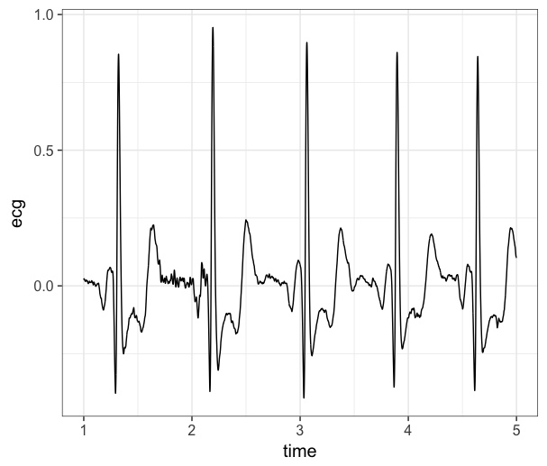

ECG Data Extraction
Data Extraction from AcqKnowledge files
Here, we use a python wrapper around the bioread package. We are only interested in the ecg and the trigger data, so we extract them.
rawfile <- 'data/hrv_tutorial/sub1101.acq'
use_python('/usr/local/opt/python/libexec/bin/python') # I needed to do this, you probably don't
br <- import('bioread')
df <- py_to_r(br$read_file('data/hrv_tutorial/sub1101.acq'))
recg <- df$channels[[1]]
ecg <- as.vector(recg$data)
rtrigger <- df$channels[[8]]
triggers <- as.vector(rtrigger$data)[-1] # An extra row for some reason?Now, let’s add a time variable so we can see keep track of what happens when.
time <- seq(0, length(ecg)-1)
options(digits.secs=3)
time_ms <- time/1000Next, we combine all of the data together into a single dataframe and plot the raw signal just to have a look at it.
data <- data.frame(time = time_ms, ecg = ecg, trigger = triggers)
plotdf <- data[1000:5000,] # first 4 seconds
library(ggplot2)
ggplot(plotdf, aes(x=time, y=ecg)) +
geom_line() +
theme_bw(base_size = 15)

If we are happy with how the raw data looks, we can move forward with saving the data. We will save it as a .RDS file so we can easily read it back into R in the next section.
saveRDS(data, file = 'data/hrv_tutorial/sub1101.RDS')